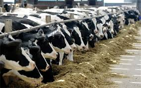
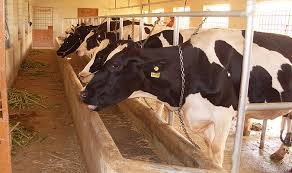
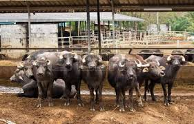
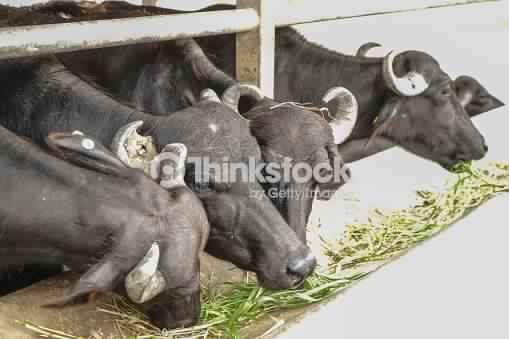

Cattle benefit the environment and help prevent range fires.
What is the investment required for the dairy farm?
Generally one animal requires about Rs. 1.2 lakh as the capital investment. The break-up: Rs 1.2 lakh is Rs. 60, 000-70, 000 cost of one animal, Rs. 30,000- 40, 000 on the shed, farm development activities and machinery requirements accounts for about Rs.15,000-20,000 per animal. So for a farm of 10 animals the total capital investment needed is about Rs. 12 lakh approximately. The payback period will be 3 to 4 years.
How to get loan from bank?
To get loan from banks first the important documents have to be collected, namely project proposal, owner’s background and collateral security for the loan amount.
The detailed project report needs to be prepared by an expert or by the owner himself giving details on basic drawing and the farm machinery plus instruments required and then approach the bank for loan.
Once these documents are submitted then in parallel, identify the land and start construction of the farm and basic necessities like farm sheds, fodder production land, development etc. The bankers will later come to the site and approve the loan based on the credit history of the dairy farm owner. Once the loan is arranged then the actual dairy farming activity can be started. One can approach 3 or 4 nationalized banks preferably because in private banks interest rates may be quite high.
What are the differences between cows and buffaloes?
1. Cow is docile and easy to handle while buffaloes are a little wild and difficult to manage.
2. The milk perspective – cow milk has less fat, that is 3% – 5% depending on the breed of the cow while in the buffalo milk the fat percentage ranges from 6%- 9%, again depending on the breed of the buffalo.
3. The lactation period in the cows is about 300 days (gestation period is 9 months 9 days) and in the buffaloes it is about 300 to 305 days (gestation period is 10 months 10 days). In case of inter-calving period it is 12 to 13 months in cows whereas 15 to 17 months in buffaloes.
4. Average milk production in cow may range from 10 liters to 15 liters while in buffaloes it is about 7 to 8 liters. It is less in buffaloes as the fat percentage is high and the milk will be sold at a higher price, may be Rs 35-40 and the cow milk is sold at Rs 25-30.
Decide on cow or buffalo farm based on these basic differences and market demand. South Indian’s prefer cow’s milk and North Indian’s prefer buffalo’s milk.




What are the major mistakes dairy farmers commit which results in losses or closure of the farm?
1. It is the improper breeding cycle. Generally a cow should give birth to a calf at every 12 months to 13 months interval and if the inter-calving period is extended to 15 months the milk production will not increase but the dry period will start increasing then and the earning of the farm will drop.
2. Improper feed management.
3. The farm workers adulterate milk with water.